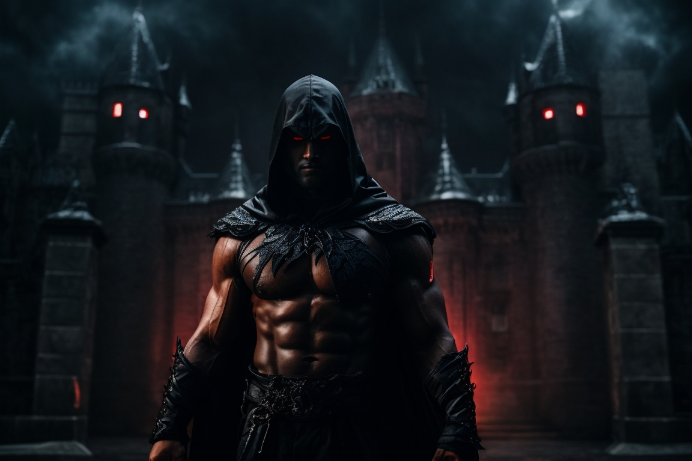

Whispers from the Abyss

Deep within the heart of the eerie and desolate Blackwood Manor, a chilling secret lay hidden for centuries.
The mansion, engulfed in ominous mist and enveloped by gnarled trees, stood as a dark sentinel of times long past.
Its very presence sent shivers down the spines of those who dared to venture near.
For generations, tales of the mansion had been whispered in hushed tones, passed down through a lineage that knew not to tread too close to its sinister gates.
They spoke of an unholy presence that inhabited the shadows, a malevolent force that craved company in the abyss.
As night descended, the air thickened with dread, and the walls of Blackwood Manor seemed to pulse with a sinister life of their own.
Unseen eyes watched from the darkness, and an icy breath brushed against the nape of your neck, sending your heart racing.
It was said that once you entered the mansion, you became forever entwined with its sinister history.
Desperate souls who dared to cross the threshold soon found themselves ensnared in a nightmarish realm where reality and illusion twisted and melded together.
Now, as you stand at the mansion's entrance, the weight of its history bears down upon you.
Are you brave enough to step inside, to unravel the mysteries that lie within, or will you become just another haunting shadow in the never-ending nightmare of Blackwood Manor?
As you ventured deeper into the mansion, strange occurrences became more frequent.
Whispered voices danced on the edges of your consciousness, and ghostly figures seemed to materialize, only to vanish when you blinked.
Each step forward felt like a descent into madness.
In a forgotten chamber, you discovered an ancient diary, its pages filled with cryptic entries and desperate pleas for release.
It spoke of a curse that bound the souls of the mansion's former residents to a never-ending purgatory, their torment fueled by the dark secrets they took to their graves.
With every passing hour, the boundary between reality and the supernatural blurred further.
The walls seemed to close in, and your own reflection in the cracked mirrors bore a sinister, mocking grin. It was as if the mansion itself sought to consume your very soul.
As the night wore on, the horrors intensified. Phantom footsteps echoed in empty corridors, and spectral hands reached out from the shadows, their grip icy and insistent.
You couldn't escape the feeling that the malevolent force that dwelled here hungered for something—perhaps your own soul to add to its collection.
In "Whispers from the Abyss," you'll be plunged into a chilling world of spectral horrors, where the line between the living and the dead blurs into oblivion.
Can you uncover the truth behind the mansion's curse, or will you become another lost soul, forever trapped in its nightmarish embrace? The choice is yours, but be warned—the price of curiosity may be steeper than you can imagine.